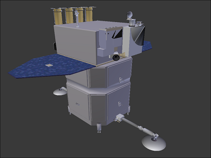

Home
Missions
Updates
Level-3
NASA's historic Parker Solar Probe mission is revolutionizing our understanding of the Sun, where changing conditions can propagate out into the solar system, affecting Earth and other worlds.
Parker Solar Probe travels through the Sun’s atmosphere, closer to the surface than any spacecraft before it, facing brutal heat and radiation conditions to provide humanity with the closest-ever observations of a star.
More..

Solar Dynamics Observatory
NASA’s Solar Dynamics Observatory, or SDO, has studied how the Sun creates solar activity and drives space weather -- the dynamic conditions in space that impact the entire solar system, including Earth. SDO’s measurements of the Sun -- from the interior to the atmosphere, magnetic field, and energy output -- have greatly contributed to our understanding of our closest star
More..
Parker Solar Probe